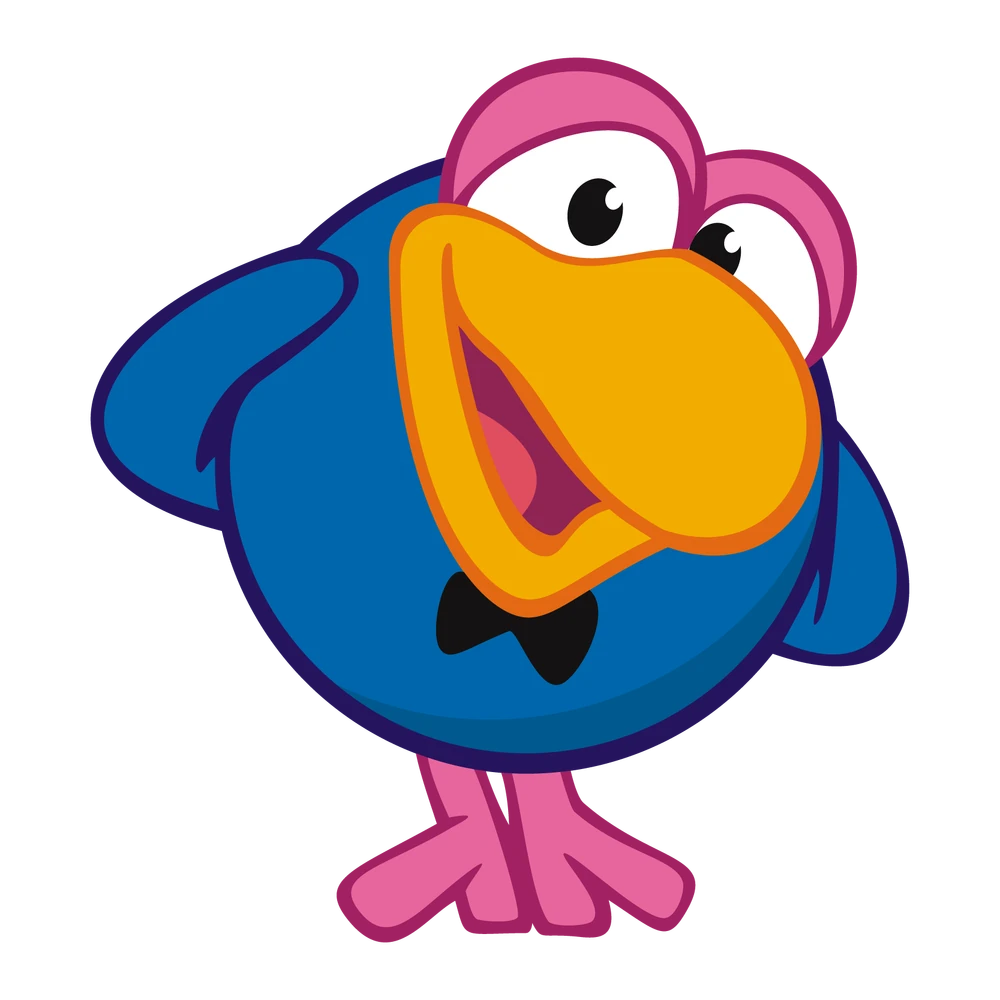

Кар-Карыч — один из главных персонажей мультипликационной франшизы «Смешарики», пожилой ворон. Самый артистичный среди главных героев. В молодости много путешествовал. Играет на рояле, виолончели («Наказуха») и даёт уроки пения другим смешарикам («Ля»).
